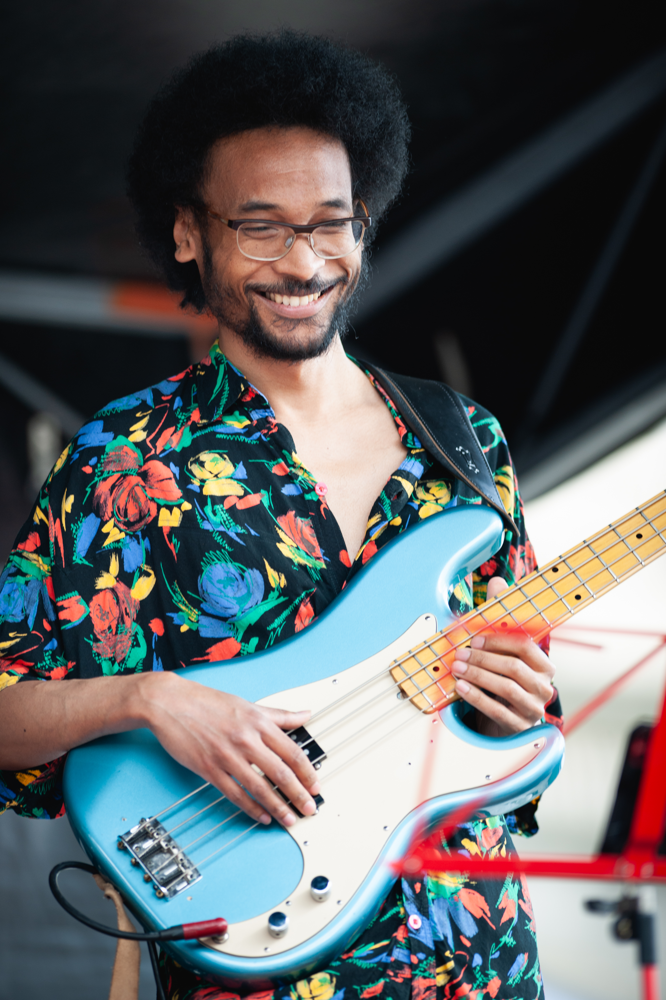

Lausanne & Alentours
Aro Ramamonjy est musicien professionnel et enseignant, installé dans la région de Lausanne. Il commence la musique à six ans par la guitare classique au conservatoire avec Georges Troly, avant de découvrir le jazz et les musiques actuelles et d’explorer progressivement différents instruments : saxophone, basse, contrebasse et chant.
Diplômé de la Haute École de Musique de Lausanne (HEMU), il joue aujourd’hui dans des projets aux esthétiques variées et partage également son expérience à travers l’enseignement. Ses activités l’amènent à passer d’un style et d’un instrument à l’autre, aussi bien sur scène que dans le cadre de l’enseignement et de projets musicaux.
Il a étudié le saxophone avec Thomas Savy, nommé à plusieurs reprises aux Victoires du Jazz, la basse avec Étienne Mbappé, bassiste internationalement reconnu, et la contrebasse avec Bänz Oester, lauréat du Musikpreis du canton de Berne en 2023. Il a également pris des cours d’alto et de piano, et abordé la clarinette et le oud en autodidacte. À la guitare, il apprécie la diversité des timbres que l’on peut obtenir, mais aussi la possibilité d’avoir un son très direct et percutant pour accompagner une voix. À la basse, il apprécie particulièrement le rôle d’accompagnateur et le fait d’être au service du jeu collectif, à l’écoute des autres musiciens et de ce qui se joue autour de lui. Au saxophone, il aime particulièrement le jeu en section, le mariage des timbres et la recherche d’un son de groupe, mais aussi le fait de pouvoir porter une mélodie, lui donner une intention et la transmettre. Plus largement, il aime créer des connexions avec les autres musiciens et avec le public.

Mon parcours m’a amené à m’intéresser au son sous différents angles : comme phénomène physique, comme matière musicale et comme expérience à partager. Ces différentes approches nourrissent ma façon d’écouter, de jouer et d’enseigner.
Avant de se consacrer pleinement à la musique, Aro Ramamonjy a travaillé comme ingénieur, chercheur et enseignant à l’université dans le domaine de l’acoustique et du traitement du signal. Il a étudié à l’IRCAM — Institut de Recherche et Coordination Acoustique/Musique.
La vidéo ci-contre présente son sujet de thèse de doctorat, soutenue à Paris. Ses travaux de recherche ont également été récompensés par trois prix.
En savoir plus sur mon expérience scientifique